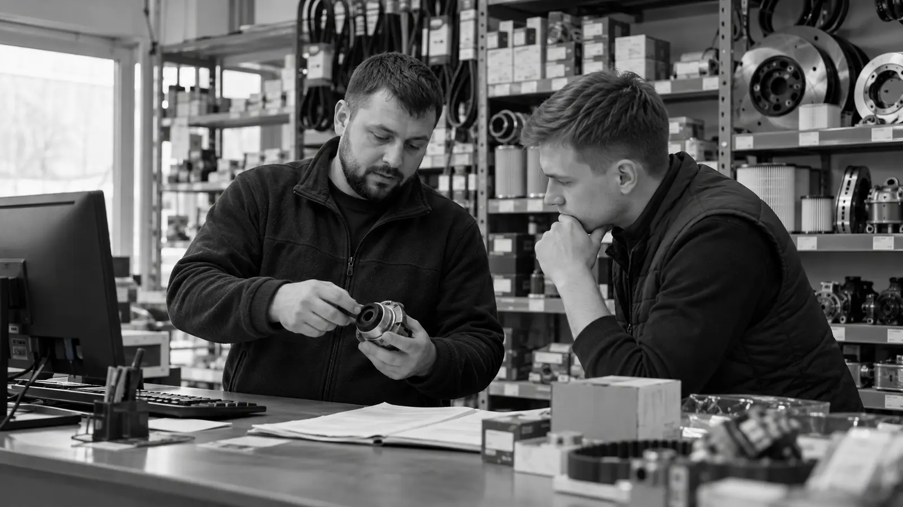
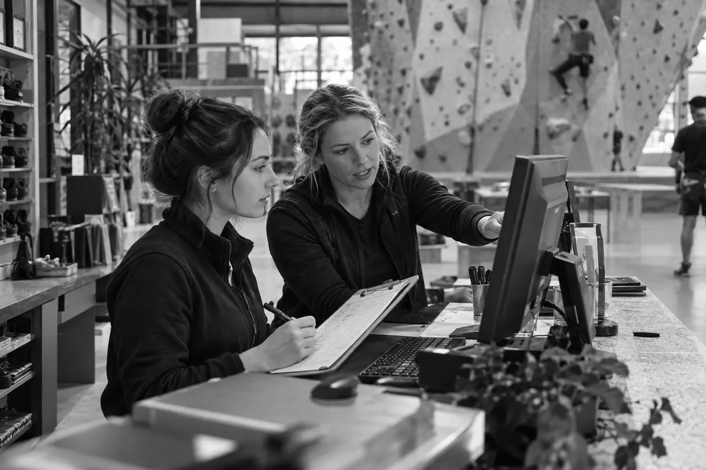

Руководитель сам разбирает отклики и тратит время на неподходящих кандидатов
HR-бюро «Не бесит»
Персонал без лишнейнагрузки на руководителя
Подбираем сотрудников и выстраиваем понятные процессы работы с ними — от поиска до адаптации и обучения.
Работаем с малым бизнесом, где нет штатного специалиста по персоналу или внутренней команде не хватает ресурса.
Когда мы полезны
Персонал занимает
слишком много внимания
Линейные сотрудники нужны постоянно, поэтому поиск нельзя остановить после первого выхода
Новички долго входят в работу, а причины ранних уходов остаются непонятными
Направления работы
Что можно
передать бюро
Выберите задачу — в каждой карточке сразу показано, что останется на вашей стороне.
Линейный и производственный персонал
Рабочие, сотрудники производства, кухни, склада и торговых точек.
Для компании: назначенные встречи и управляемый поток кандидатов в согласованный период.
Специалисты и руководители
Поиск, первичный отбор, видеоинтервью и сопровождение выхода.
Для компании: назначенные собеседования с кандидатами, прошедшими отбор, и выводы по каждому.
Найм и адаптация
Находим, где компания теряет кандидатов, время руководителей и новых сотрудников.
Для компании: причины сбоев, приоритеты и конкретный план изменений.
Адаптация и обучение
Собираем маршрут новичка, инструкции и контрольные точки.
Для компании: готовая система и интерактивные материалы под конкретную должность.
Практика бюро
Как мы решали
задачи клиентов
Исходная ситуация, наша работа и конкретный результат.


02менеджера за 3 недели
Два менеджера по продажам за три недели
Ситуация. Вакансия долго не закрывалась: условия уступали предложениям конкурентов, а подходящие кандидаты отказывались.
Что сделали. Сравнили вакансию с рынком, скорректировали условия и перезапустили поиск.
За три недели нашли и вывели на работу двух менеджеров. Оба продолжают работать в компании.
Есть похожая задача?Обсудить её с бюро
Стоимость подбора
Цена известна
до начала поиска
Рабочие и производственный персонал
40 000 ₽за одну вакансиюСпециалисты
50 000 ₽за одну вакансиюРуководители
70 000 ₽за одну вакансиюПостоянный линейный наймМесячный формат: оплата за период работы, а не за каждого вышедшего сотрудника.
Оплата разового подбора40% — перед запуском
60% — после трёх полных рабочих дней сотрудника
60% — после трёх полных рабочих дней сотрудника
Что важно знать: расходы на размещение вакансий согласовываются отдельно. Срок гарантии и условия замены фиксируем в договоре. Аудит и разработку системы адаптации рассчитываем после определения объёма работы.
Отзывы о подборе
Что говорят
после работы с бюро
Все отзывы опубликованы клиентами на Avito. Оригиналы можно открыть целиком.
Avito · подбор персонала★★★★★
«Было непросто найти кандидата с таким набором навыков, которые бы соответствовали нашим требованиям. Елизавета справилась отлично».
Анастасиясложный профиль кандидата
Avito · две вакансии★★★★★
«Итог: в работе очень вежливый специалист, со вниманием отнеслась к нашим обстоятельствам и потребностям».
Анна Тюпилиназакрытие двух вакансий
Avito · производство★★★★★
«Сотрудничали по подбору рабочего персонала на производство. Нашли двух сотрудников за месяц».
Андрейпроизводственный персонал
Три независимых отзыва по подбору персонала · оценка 5 из 5
Как устроена работа
Бюро берёт организацию проекта на себя
Елизавета — основатель «Не бесит» и руководитель проекта. Она согласовывает задачу, собирает специалистов под неё и отвечает за результат.
Поиск, аналитика и подготовка материалов остаются внутри бюро. Вам не нужно координировать нескольких исполнителей и контролировать каждый этап.
С вашей стороны — только ключевые решения. Остальное организуем мы.
Как начинается работа
От ситуации —
к понятному плану
Вы описываете задачу
Достаточно рассказать, что происходит, указать должность и город.
Мы предлагаем решение
Оцениваем рынок и объём работы, определяем формат, срок и стоимость.
Запускаем проект
Фиксируем результат и зоны ответственности в договоре, затем начинаем работу.
Стоимость, сроки и результат фиксируем до начала проекта. Работаем по договору.
Начать разговор
Расскажите, что сейчас происходит с персоналом
Для начала достаточно описать задачу, должность и город. Мы оценим ситуацию и предложим подходящий формат работы.
Отвечает Елизавета — основатель и руководитель проектов